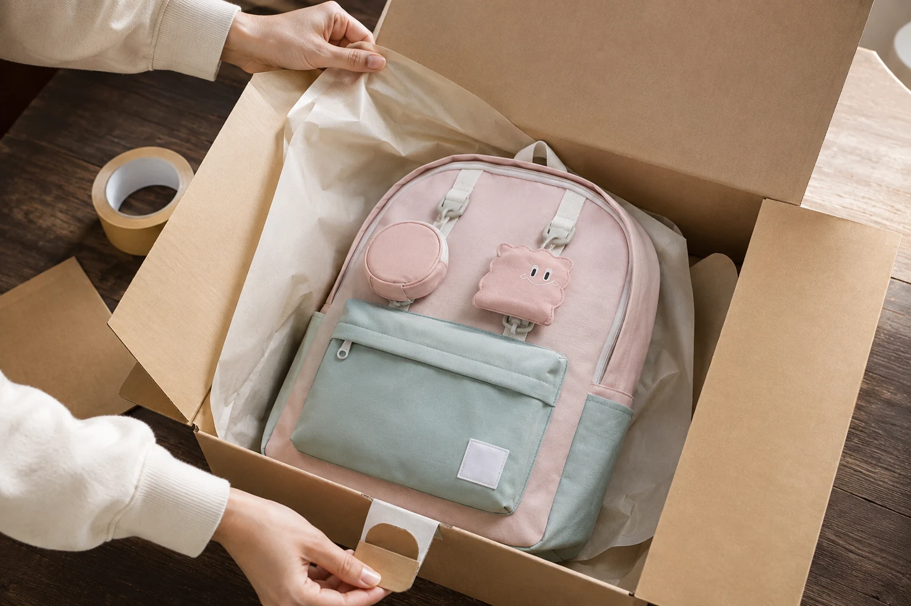

패키지 하나를 바꾸는 데 석 달이 걸린 이야기

“뜯기가 조금 불편해요.” 어느 날 도착한 한 줄 후기가 모든 것의 시작이었습니다.
후기 한 줄의 무게
한 분이 남긴 불편은 말하지 않은 열 분의 불편이라고 생각했습니다. 그래서 포장을 처음부터 다시 들여다봤습니다.
석 달간 바꾼 것들
- 개봉선 위치를 손이 자연스럽게 가는 곳으로 이동
- 재활용 가능한 소재로 전면 교체
- 안내 문구를 줄이고 글자를 키움
결과는 단순해 보이지만, 그 단순함에 도달하는 데 석 달이 걸렸습니다. 좋은 물건은 디테일이 말해준다고 믿습니다.